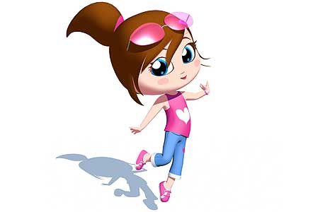

About Me
Hi my name is Neha Rai.
I have around three and half years of hands on experience in ASP.net and Microsoft SQL server.Currently I am working Tata Consultancy Services(TCS).
Things I love most in life are my family and friends.
Moreover, being a sociable person, I have many friends.
I believe that friendship is one of the most important and valueable asset in human life.
We exchange new ideas, find many interesting things about each other, compete each other and share experiences.
